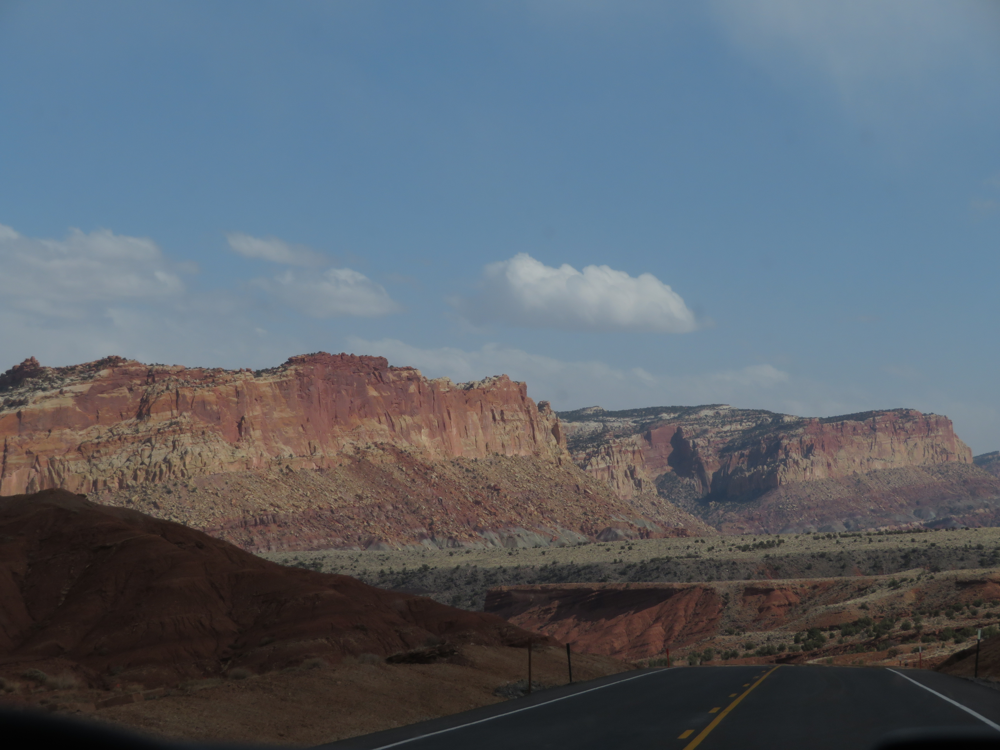

Centered around the Waterpocket Fold, Capitol Reef National Park is widely considered as one of the United States' most underrated national parks, containing unique desert scenery found no where else on earth. That said, the park is certainly worth a visit, and while I only did a drive-by, I highly recommend a longer visit as there is plenty of things to discover in this magical park.
The scenic drive in Capitol Reef is well worth it if you don't have much time in the park like I did. The Capitol Gorge area (Left and center) is extremely impressive, as you are surrounded by narrow canyon walls on both sides. The scenery is extremely otherworldly, as the desert landscape is sort-of slanted due to the Waterpocket Fold, certainly really cool to see in person.


Capitol Reef also has plenty of gorgeous viewpoints just off the road, with the most famous being Panorama Point and the Goosenecks Overlook, both being best during sunset. The viewpoints and scenic drives are ultimately just scratching the surface of what Capitol Reef has to offer and I certainly need to come back to appreciate this unique geological landform in all its glory.